◆活動舉辦期間◆
2019年2月20日(三) 17:00(預定)～3月6日(三) 3月11日(一) 11:59
※3/4(一) 17:00修正
◆活動概要◆
舉辦特別活動「復刻版:深海電腦樂土 SE.RA.PH -Second Ballet-」
請盡情享受由Fate/EXTRA CCC的原作者奈須きのこ執筆的特別活動！
活動限定Servant「★4(SR)BB」也登場！
推進主線關卡，讓「★4(SR)BB」洗心革面・並得到她吧！
※本頁面皆為開發中圖片。會有與實際圖片相異的情況。 ※本活動為再調整在2017年舉辦的Fate/EXTRA CCC×Fate/Grand Order 特別活動「深海電腦樂土 SE.RA.PH」更容易遊玩的「復刻版活動」。 ※在上次舉辦時獲得過「聖杯」的情況，本活動中會以「傳承結晶」代替「聖杯」做為通過報酬 ※一部份的關卡為日後開放。
◆活動參加條件◆
滿足以下條件的Master才能參加
・通過「終局特異點」
※不需要通過亞種特異點(從Ⅰ到Ⅳ)。
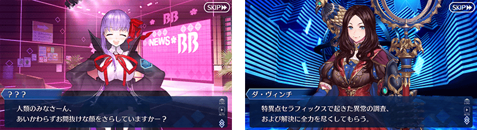
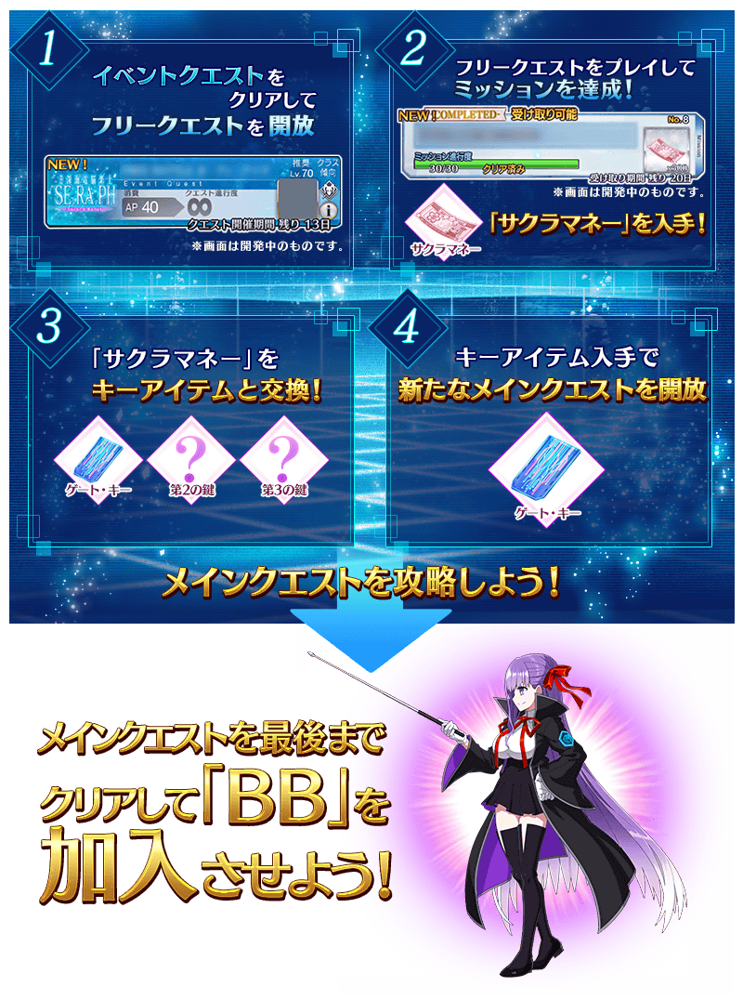
能享受故事的主線關卡將以下表的行程開放。
推進主線關卡的話，會開放收集活動道具的自由關卡。
之後的自由關卡是由主線關卡和自由關卡、通過任務來開放。
【關卡的舉辦期間】
| 開放關卡 | 舉辦期間 |
|---|---|
| 主線關卡第一幕 自由關卡 |
2月20日(三) 17:00(預定)～
|
| 主線關卡第二幕 自由關卡 |
2月22日(五) 17:00～ |
| 主線關卡第三幕 自由關卡 |
2月24日(日) 17:00～ |
| 主線關卡第四幕～終幕 自由關卡 |
2月25日(一) 17:00～ |
| 主線關卡後半 自由關卡 |
3月1日(五) 17:00～ |
※3/4(一) 17:00修正
自2019年3月1日(五) 17:00會開放新的關卡與任務。
新關卡與任務的開放條件為通過主線關卡至最後。
特別活動「復刻版:深海電腦樂土 SE.RA.PH -Second Ballet-」中，「收集特定的道具一定數以上」「擊倒特定的敵人」等達成各式各樣條件就可獲得豪華報酬的任務！
另外，對應任務的達成狀況，會開放新的關卡和任務。
攻略任務，邊獲得指令紋章等的達成報酬邊推進主線關卡！
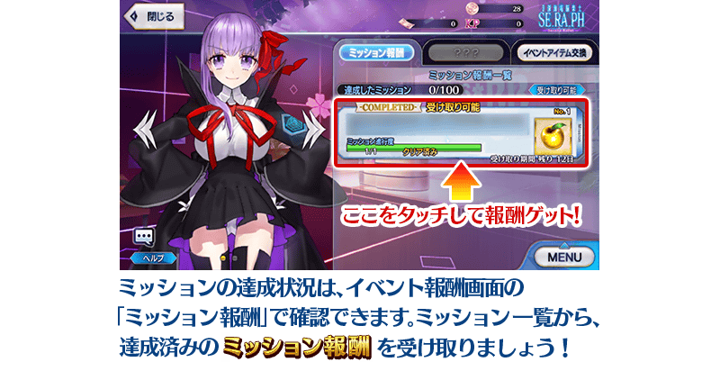
※請注意光滿足通過條件是無法入手報酬的。 ※請注意未任務報酬的話，不會開放新的任務和地點。
主線關卡及自由關卡中，會有在戰鬥開始時會有「BB拉霸」開始的情況。
BB拉霸會根據隨機連線的圖案，在戰鬥賦予各式各樣的效果。
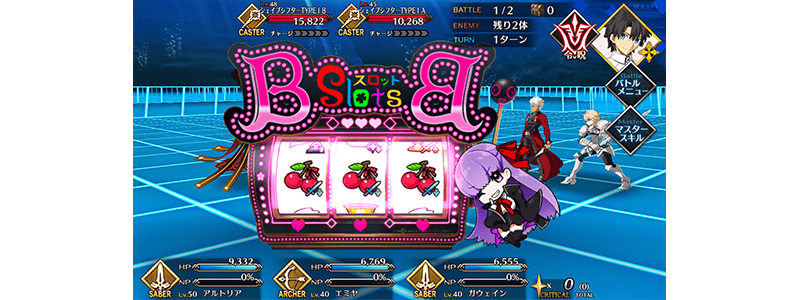
推進特別活動「復刻版:深海電腦樂土 SE.RA.PH -Second Ballet-」主線關卡第一幕的話，在地圖上會追加新地點。
在新地點會出現享受劇本的繞路關卡。關卡在通過的話會開放下1個，最後開放超高難易度關卡。
攻略所有的關卡，得到特別的報酬吧！
※繞路關卡做為活動任務的對象外，擊倒出現敵人、通過關卡的話不會讓活動任務的進行度有所變化。 ※繞路關卡由於做為活動加成的對象外，不會在關卡開始時的支援選擇畫面顯示活動加成篩選器ん。 ※繞路關卡在通過後會消失。 ※繞路關卡中，在戰鬥開始時不會發生「BB拉霸」。 ※繞路關卡預定日後在達文西工房的「稀有稜鏡交換」追加。
◆關卡開放時間◆
2019年2月20日(三) 17:00～(預定)
◆關卡開放條件◆
通過特別活動「復刻版:深海電腦樂土 SE.RA.PH -Second Ballet-」主線關卡第一幕至特定的進行度
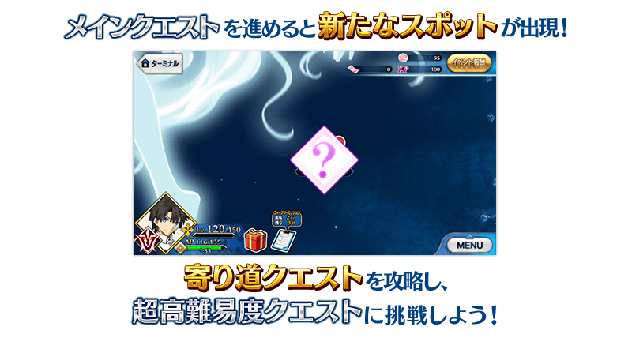
超值攻略方法・其1
本活動的期間中，強化「★4(SR)BB」時的獲得經驗值變成2倍。
是讓成為活動加成對象的「★4(SR)BB」等級一口氣上升的機會！
◆舉辦期間◆
2019年2月20日(三) 17:00(預定)～3月6日(三) 3月11日(一) 11:59
※3/4(一) 17:00修正
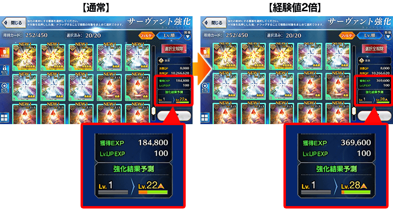
超值攻略方法・其2
本活動的期間中。將下表的Servant編入隊伍的話，在活動關卡中會提升活動道具「櫻硬幣」的掉落獲得數。
強化對象Servant，挑戰活動吧！
※活動加成的效果量因Servant而異。
※自2月16日(六) 15:00，在Servant選擇畫面和Servant強化畫面等，追加「下次活動對象」篩選器。
由於是只顯示於下個舉辦活動活躍Servant的便利功能，敬請活用。
※繞路關卡由於做為活動加成的對象外，不會在關卡開始時的支援選擇畫面顯示活動加成篩選器。
【活動加成的對象Servant】
| 職階 | 稀有度 | Servant名 | 增加掉落 獲得數 |
|---|---|---|---|
| Saber | ★★★★★ | 尼祿・克勞狄烏斯〔Bride〕 | 1個 |
| ★★★★ | 高文 | 1個 | |
| ★★★★ | 鈴鹿御前 | 2個 | |
| ★★★★ | 尼祿・克勞狄烏斯 | 1個 | |
| Archer | ★★★★★ | 吉爾伽美什 | 1個 |
| ★★★★ | Emiya | 1個 | |
| ★★★★ | Emiya〔Alter〕 | 1個 | |
| ★★★★ | 崔斯坦 | 1個 | |
| ★★★ | 羅賓漢 | 1個 | |
| Lancer | ★★★★★ | 迦爾納 | 1個 |
| ★★★★ | 弗拉德三世〔EXTRA〕 | 1個 | |
| ★★★★ | 伊莉莎白・巴托里 | 1個 | |
| ★★★★ | 李書文 | 1個 | |
| ★★★ | 庫・夫林 | 1個 | |
| Rider | ★★★★★ | 弗朗西斯・德雷克 | 1個 |
| Caster | ★★★★★ | 玉藻前 | 1個 |
| ★★★★ | 童謠 | 1個 | |
| ★★ | 漢斯・克里斯蒂安・安徒生 | 1個 | |
| Assassin | ★★★★★ | 李書文 | 1個 |
| Berserker | ★★★★ | 玉藻貓 | 1個 |
| ★★★ | 呂布奉先 | 1個 | |
| Alterego | ★★★★★ | 帝王花 | 2個 |
| ★★★★★ | 殺生院祈荒 | 2個 | |
| ★★★★★ | Meltryllis | 2個 | |
| ★★★★ | Passionlip | 2個 | |
| MoonCancer | ★★★★★ | BB | 2個 |
| ★★★★ | BB | 2個 |
※2/27(三) 17:00更新 ※就算成為對象Servant，也會有不在本活動主線劇本登場的情況。
超值攻略方法・其3
裝備可在關卡報酬和任務報酬入手的活動限定概念禮裝「いつかの夏」的話，會提升掉落活動専用道具的櫻色系敵人追加出現率。
另外，裝備可靠活動道具交換入手的活動限定概念禮裝「始まりの予感」的話，會提升活動道具「櫻硬幣」的掉落獲得數。
※請注意各關卡的道具掉落率並非100％。 ※請注意各關卡的敵人追加出現率就算顯示100％的情況，實際的追加出現率仍為100％。
超值攻略方法・其4
裝備期間限定概念禮裝會提升活動限定敵人的追加出現率！
裝備在聖晶石召喚Pick Up的期間限定概念禮裝「我ら征くは星の大海」「月の海の生徒会」「ザ・ケージ」的話，會提升活動限定敵人「吞噬者系敵人」「變形者系敵人」「TYPE I系敵人」各自的追加出現率。
※請注意各關卡的敵人追加出現率就算顯示100％的情況，實際的追加出現率仍為100％。
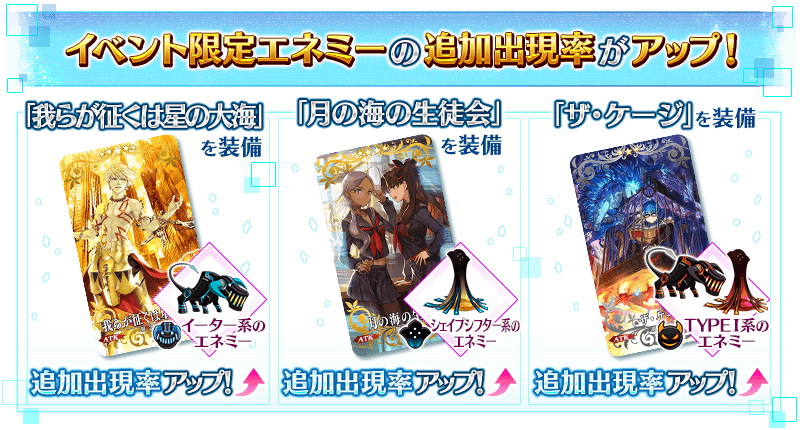
活動道具可自點擊管理室(ターミナル)畫面右上「活動報酬」鍵所顯示的「活動道具交換」畫面，交換以下的道具。
※英靈結晶・流星之芙芙ALL★4(HP)、英靈結晶・日輪之芙芙ALL★4(ATK)的交換會在通過特別活動「復刻版:深海電腦樂土 SE.RA.PH -Second Ballet-」自2月25日(一) 17:00開放的主線關卡後開放。
◆交換期間◆
2019年2月20日(三) 17:00(預定)～3月13日(三) 3月18日(一) 11:59
※3/4(一) 17:00修正
※活動道具交換期間結束後「櫻硬幣」會消失。
【2月20日(三) 17:00追記】
確認到能用櫻硬幣交換道具的交換期間，沒有顯示上述3月18日(一) 11:59為止剩餘天數，而是顯示做為活動結束期間3月11日(一) 11:59為止剩餘天數的問題。
※能用櫻硬幣交換的道具以外的本活動専用關鍵道具，是在2019年3月11日(一) 11:59結束交換期間。
※3/4(一) 17:00修正
◆能用櫻硬幣交換的道具◆
 |
【活動限定概念禮裝】 【技能強化＆靈基再臨素材】 【靈基再臨素材】 【其他道具】 |
| 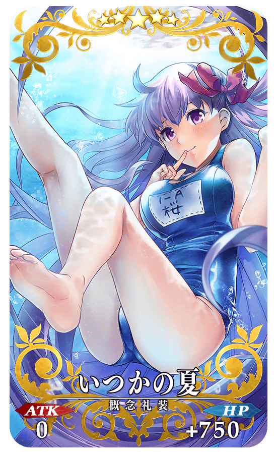 |
★★★★★SSR
|


|
★★★★SR |
◆得到活動限定概念禮裝EXP卡「BBショット！」吧！◆
做為活動限定的報酬，可入手能大幅強化概念禮裝大幅的EXP卡！
無論如何請藉此機會，強化中意的概念禮裝！
| 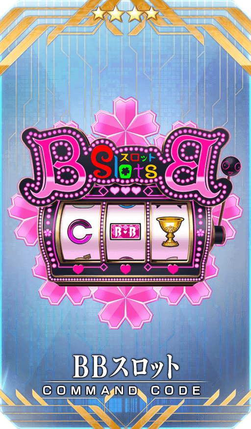 |
★★★★SR |
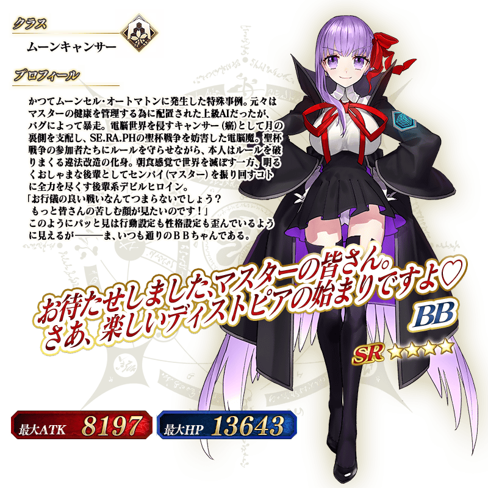
◆靈基再臨◆
使用只能靠任務報酬入手的「回憶的緞帶(思い出のリボン)」的話，重複4次靈基再臨的話，卡面會有所變化！
※★4(SR)BB不會隨靈基再臨使戰鬥角色的外觀變化。
◆再入手特典◆
在復刻前的特別活動「深海電腦樂土 SE.RA.PH」入手「★4(SR)BB」的情況，在本活動能獲得再入手特典。
入手「累計6位以上」「★4(SR)BB」的話，第6位以後，每新入手1位就贈送稀有稜鏡1個至禮物箱。
介紹★4(SR)BB的寶具演出！
另外，「Fate/Grand Order」官方網站內的公告中，公開了「★4(SR)BB」的寶具演出。敬請確認。
強化尼祿・克勞狄烏斯(Saber)的特別關卡「Servant強化關卡」，做為新常駐關卡追加。
做為關卡通過報酬，不僅進行對象Servant的強化，也可獲得聖晶石。
※請注意在Servant強化關卡沒有文字冒險部份。
◆追加時間◆
2019年2月20日(三) 17:00～(預定)
◆參加條件◆
持有強化對象Servant，必須使其最終再臨。
※未持有對象Servant的情況，不會出現關卡。
※關卡沒有舉辦期限。
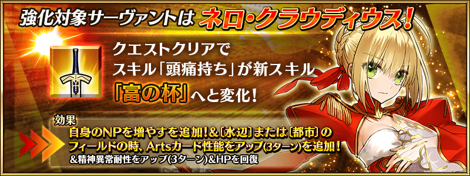
為了記念特別活動「復刻版:深海電腦樂土 SE.RA.PH -Second Ballet-」的舉辦，在達文西工房的「稀有稜鏡交換」追加下述的新道具。
◆追加時間◆
2019年2月20日(三) 17:00～(預定)
◆追加道具(恒常)◆
魔術禮裝「月之背面的記憶」獲得關卡
| 追加道具 | 能交換次數 | 1次交換所需的 稀有稜鏡數 |
|---|---|---|
| 月之背面的記憶獲得關卡 | 1次 | 5個 |
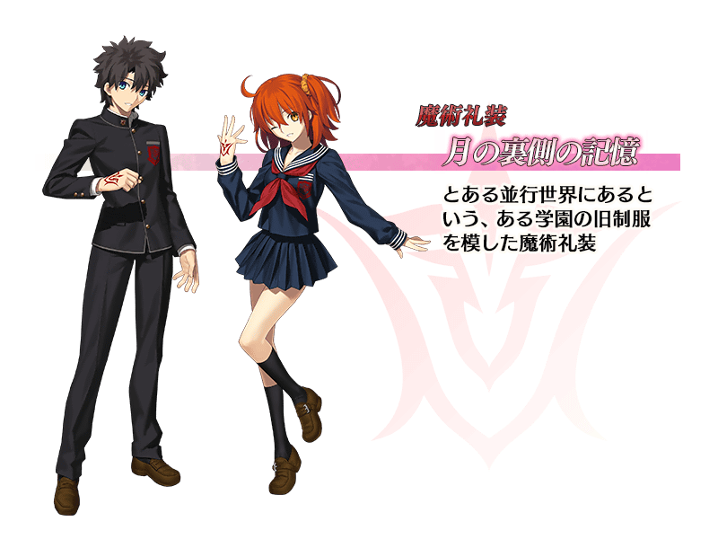
※在「稀有稜鏡交換」追加的魔術禮裝獲得關卡開放權做為常駐，沒有交換期限。 ※關於已持有交換對象魔術禮裝的玩家，剩餘次數會顯示「0次」，無法交換。 ※請注意在月之背面的記憶獲得關卡在沒有文字冒險部份。
自2019年2月20日(三) 17:00，在亞種特異點Ⅲ追加可獲得技能強化＆靈基再臨素材「九十九鏡」做為戰利品的自由關卡。
◆追加時間◆
2019年2月20日(三) 17:00～(預定)
◆追加條件◆
通過亞種特異點Ⅲ 自由關卡「無名靈峰(名もなき霊峰)」
隊伍編成時，修改為在變更Servant和概念禮裝途中的畫面中也可藉拖曳變更配置！
「MENU」＞「編成」的隊伍編成畫面，以及關卡開始前等的隊伍確認畫面中，選擇・替換Servant和概念禮裝選擇的情況，選擇「決定」前會是隊伍編成途中狀態，在此狀態變得也可藉拖曳Servant來變更配置。
◆追加時間◆
2019年2月20日(三) 17:00～(預定)
「複製隊伍」時修改為也會同時複製魔術禮裝！
隊伍編成畫面中，選擇「複製隊伍」時，不只Servant和概念禮裝，魔術禮裝也變得會同時複製。
◆追加時間◆
2019年2月20日(三) 17:00～(預定)
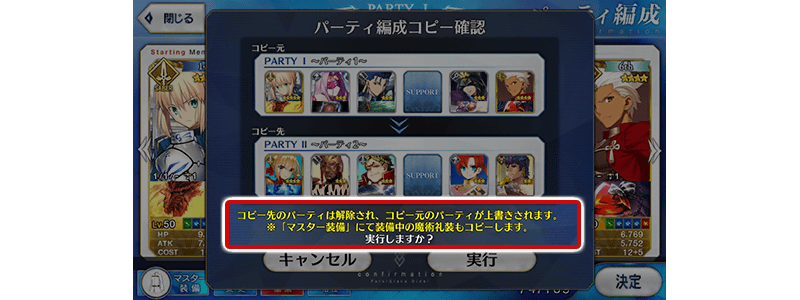
達文西工房中，修改為在交換可確認必要道具的持有數！
達文西工房的各種交換畫面中，變得會常駐在左下顯示交換必要道具的持有數。
◆追加時間◆
2019年2月20日(三) 17:00～(預定)
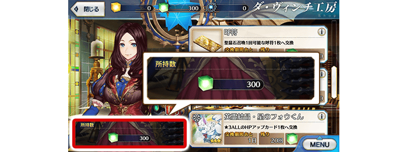
禮物箱內追加優先顯示「重要禮物」的功能！
在禮物箱內的篩選器，追加使用期限・領取期間很短的「重要禮物」不論篩選器設定而經常顯示的功能。
◆追加時間◆
2019年2月20日(三) 17:00～(預定)
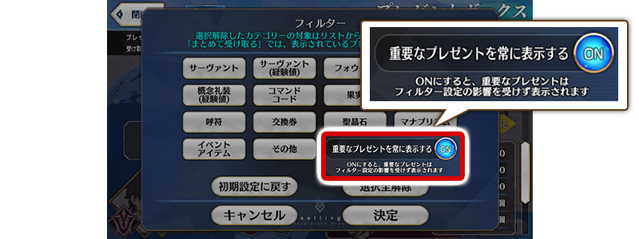
【2月20日(三) 17:00追記】
舉辦復刻活動中的「Fate/Grand Order -Epic of Remnant- 深海電腦樂土 SE.RA.PH」的漫畫在ヤングエースUP(KADOKAWA)開始配信！
第0話在ヤングエースUP公開中！
並且第1話預定2月26日(二)配信！
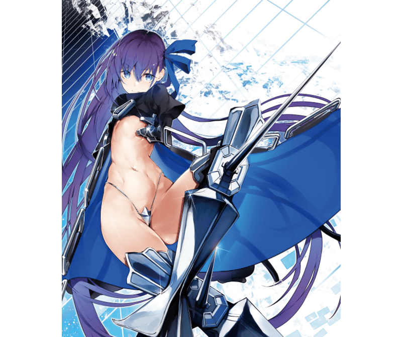
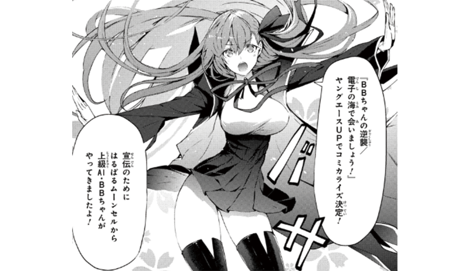
■ヤングエースUP 「Fate/Grand Order -Epic of Remnant- 深海電腦樂土 SE.RA.PH」漫畫 https://web-ace.jp/special/youngaceup/contents/20190220/
其他還有，同時舉辦期間限定「復刻 Fate/EXTRA CCC特別活動Pick Up召喚(每日交替)」！
關於詳情請自下述橫幅確認。

【3月4日(一) 17:00圖片更新】